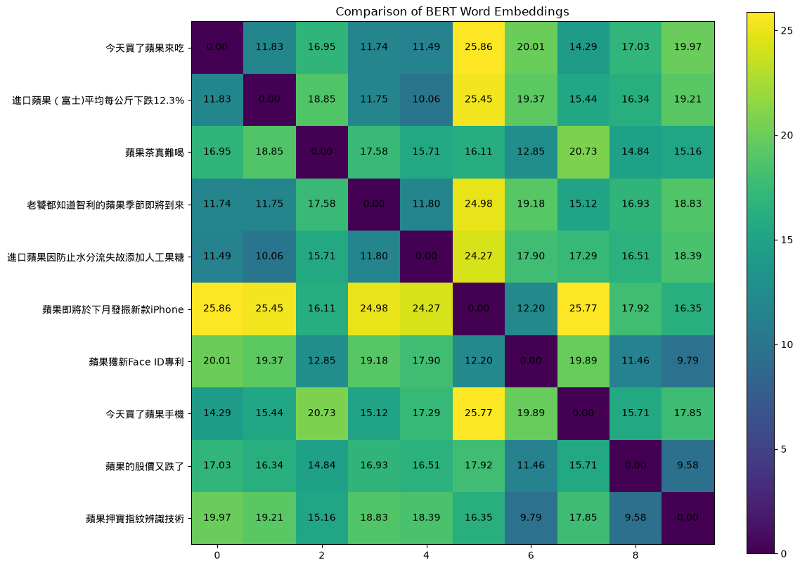
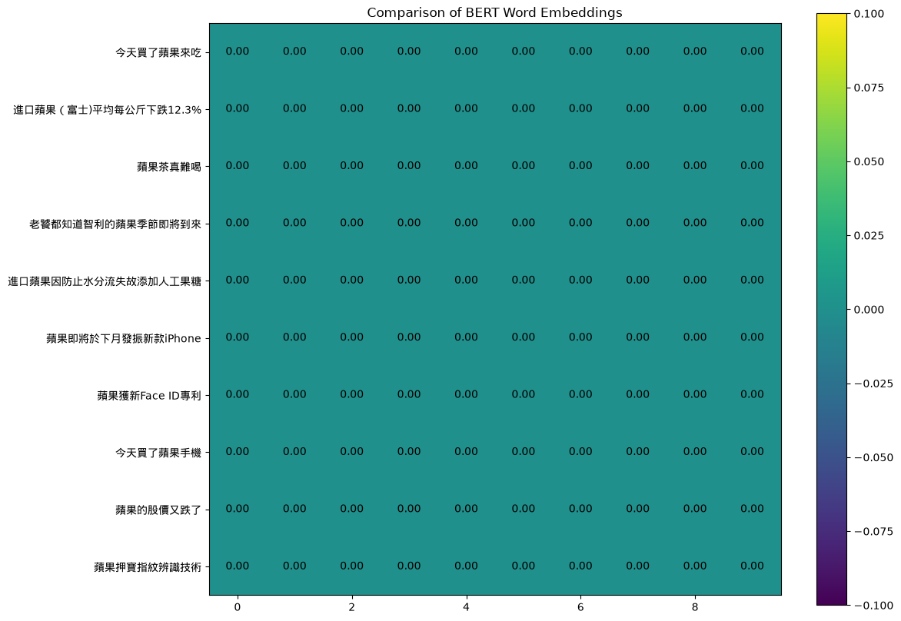
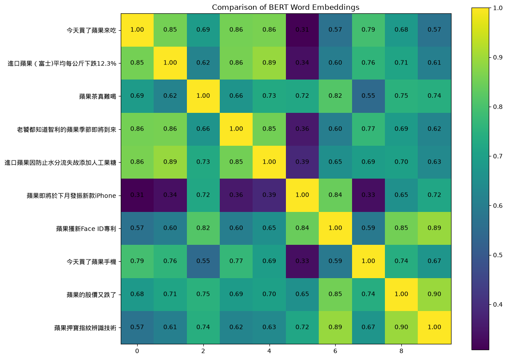
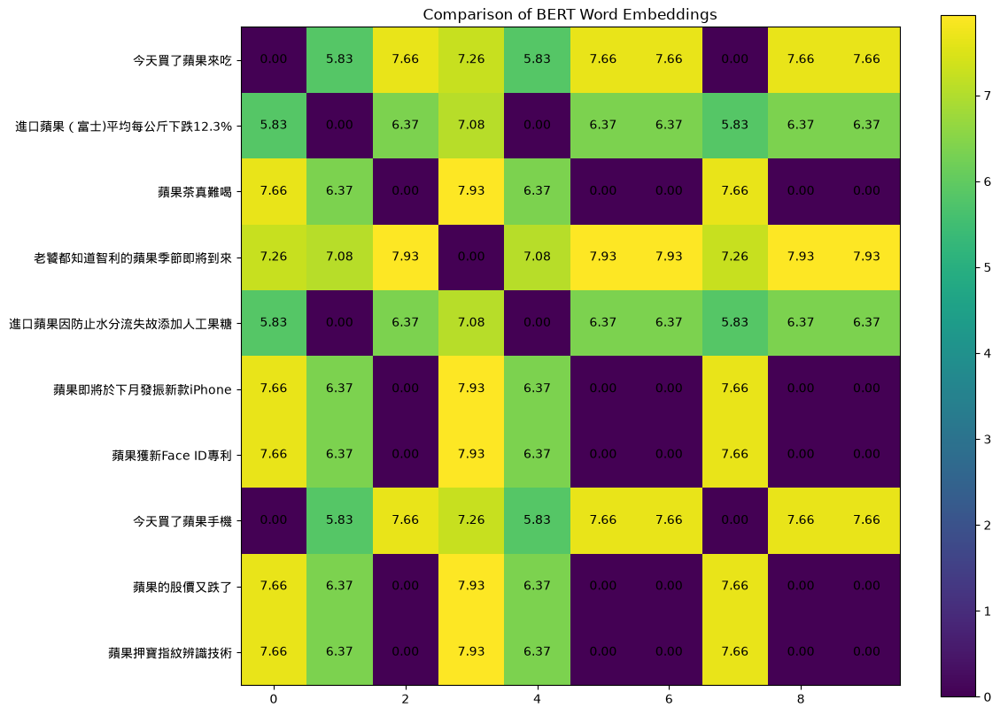
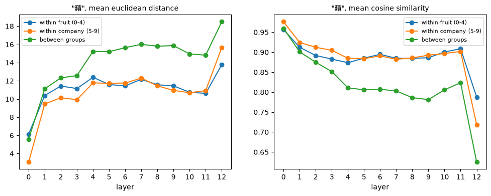
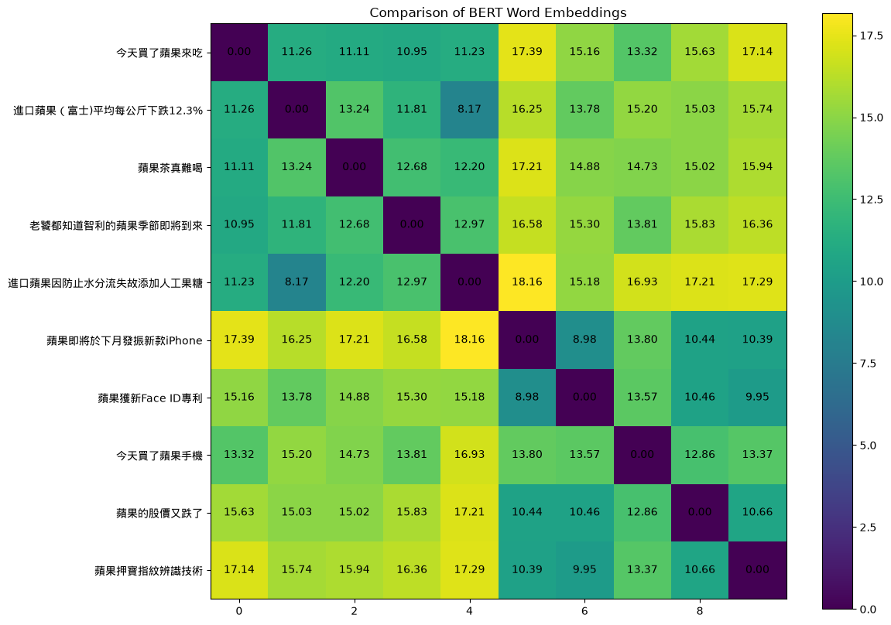
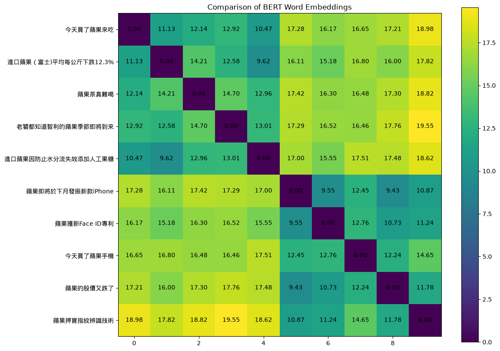
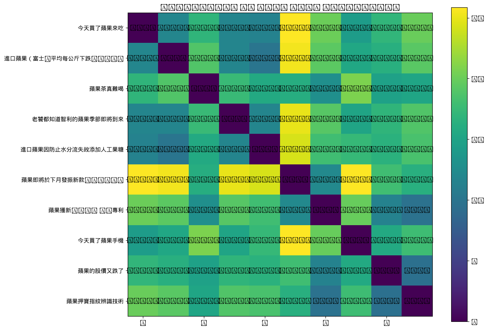
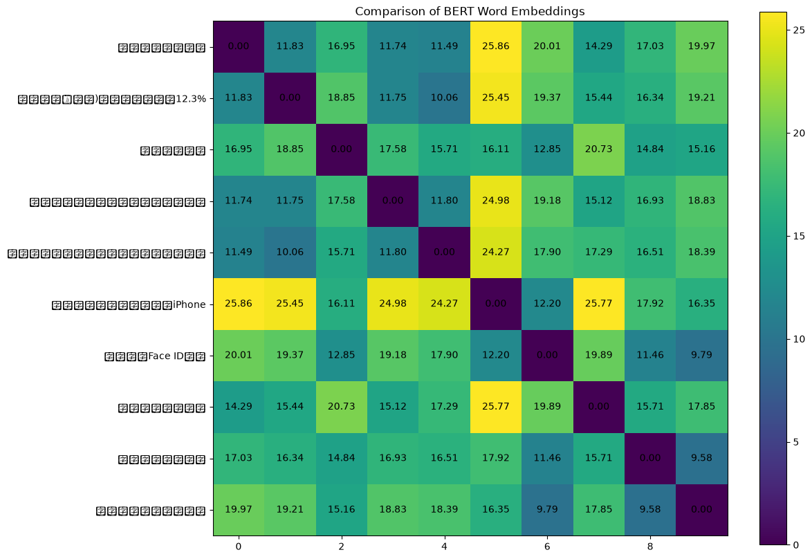

7.1 起點：bert_embedding.png
第 0 章 0.5 節執行過 bert_embedding.py：stdout 只有一行 saved ./output/bert_embedding.png，實測 6.7 秒；主程式開頭（第 85–94 行：字型、載入模型與 tokenizer）與結尾（第 117–120 行：存檔），以及 stderr 的 LOAD REPORT（cls.predictions、cls.seq_relationship 用不到）都講過了。第 0 章 0.6 節也實測過：這張圖重跑一次逐位元相同。先看輸出：

bert_embedding.png：10 個句子的「蘋」在第 12 層的向量，兩兩之間的歐氏距離。顏色越暗越近，對角線是 0。這張圖要讀懂，得先知道四件事：10 個句子是什麼（7.2 節）、「蘋」的向量怎麼取出來（7.3、7.4 節）、距離怎麼算（7.5 節）、矩陣怎麼畫（7.6 節）。7.7 節再回來逐格讀它。
作業投影片（HW09/HW09.pdf）第 16 頁的全部文字（用 PDF 文字擷取工具抽出，逐字照錄）：
Embedding Analysis
Question 28 to 30
● Compare output embedding of
BERT using:
○ Euclidean distance
○ Cosine similarity
You only need to change code in
the section “TODO” !直譯：「用歐氏距離與 cosine similarity 比較 BERT 的輸出 embedding。你只需要改 TODO 區的程式！」Q28–30 的題目本身在 Gradescope 上、不在 repo 裡（第 0 章 0.1 節〈30 題在問什麼〉），本書不知道三題實際問什麼。但最後一句說了範圍：能改的只有 TODO 區。所以本章把 TODO 區裡每一個可以改的地方（選哪個字、兩個距離函式、用哪種距離、看哪一層）都講清楚，並用本書實測的變體圖示範改了會怎樣。檔頭的 docstring 也只有一句話：
"""# Homework 9 - Explainable AI (Part 2 BERT)
## Embedding Analysis (Q28~30)
Compare the embedding of 蘋 (or 果) across sentences where 蘋果 is the fruit or the company.
The figure is saved to output/bert_embedding.png.
"""「比較『蘋』（或『果』）在不同句子裡的 embedding，這些句子裡的蘋果有的是水果、有的是公司。」這裡的 embedding 和第 6 章一樣，指的是 BERT 某一層為某個 token 輸出的向量（hidden state）。
7.2 十個句子
# Sentences for visualization
sentences = []
sentences += ["今天買了蘋果來吃"]
sentences += ["進口蘋果（富士)平均每公斤下跌12.3%"]
sentences += ["蘋果茶真難喝"]
sentences += ["老饕都知道智利的蘋果季節即將到來"]
sentences += ["進口蘋果因防止水分流失故添加人工果糖"]
sentences += ["蘋果即將於下月發振新款iPhone"]
sentences += ["蘋果獲新Face ID專利"]
sentences += ["今天買了蘋果手機"]
sentences += ["蘋果的股價又跌了"]
sentences += ["蘋果押寶指紋辨識技術"]本書和程式的 list 一樣，從 0 開始編號：第 41 行是句 0，第 50 行是句 9。圖 7.1 的 y 軸由上到下也是句 0 到句 9。程式沒有標出哪些是水果、哪些是公司；本書為了計算「組內」與「組間」，把它們分成兩組：
| 本書的分組 | 句 | 內容 |
|---|---|---|
| 水果（句 0–4） | 0 | 今天買了蘋果來吃 |
| 1 | 進口蘋果（富士)平均每公斤下跌12.3% | |
| 2 | 蘋果茶真難喝（蘋果做的茶，算水果） | |
| 3 | 老饕都知道智利的蘋果季節即將到來 | |
| 4 | 進口蘋果因防止水分流失故添加人工果糖 | |
| 公司（句 5–9） | 5 | 蘋果即將於下月發振新款iPhone |
| 6 | 蘋果獲新Face ID專利 | |
| 7 | 今天買了蘋果手機（蘋果公司的手機，算公司） | |
| 8 | 蘋果的股價又跌了 | |
| 9 | 蘋果押寶指紋辨識技術 |
句 2 與句 7 是兩個比較刁鑽的例子：句 2 的「蘋果」是一種茶的口味，不是拿在手上吃的水果；句 7 和句 0 只差最後兩個字（「來吃」vs「手機」）。7.7 節會看到，第 12 層的「蘋」在這兩句剛好都偏到另一組去。
原版就有的兩個小錯
這 10 句和原版 notebook 逐字相同，包括兩個小錯：句 1 用全形左括號「（」配半形右括號「)」；句 5「發振新款」應該是「發表新款」之類的意思，「發振」是錯字。本 repo 照原版保留（列在教學大綱〈讀 code 不盡信文件〉的第 8 項）。這兩個錯不影響「蘋」字本身的位置，但會影響周圍的 token，也就影響「蘋」看到的上下文。
7.3 bert-base-chinese：一個字一個 token
這支腳本用的模型是 bert-base-chinese（第 93–94 行，第 0 章引用過），用 BertModel 載入：只有 BERT 本體的 12 層，沒有第 6 章那種問答用的 qa_outputs。本書印出的規格：12 層、每個 token 768 維、詞彙表 21,128 個 token、參數 102,267,648 個。
第 6 章 6.3 節介紹過 tokenizer、WordPiece、[CLS]／[SEP]／[UNK]。這個中文模型的切法很單純：中文一個字就是一個 token。英文單字如果不在它的詞彙表裡，就變成 [UNK]（unknown，不認識的字）。10 句的 token（[CLS] 與 [SEP] 各佔一格）：
| 句 | token | 個數 |
|---|---|---|
| 0 | [CLS] 今 天 買 了 蘋 果 來 吃 [SEP] | 10 |
| 1 | [CLS] 進 口 蘋 果 （ 富 士 ) 平 均 每 公 斤 下 跌 12 . 3 % [SEP] | 21 |
| 2 | [CLS] 蘋 果 茶 真 難 喝 [SEP] | 8 |
| 3 | [CLS] 老 饕 都 知 道 智 利 的 蘋 果 季 節 即 將 到 來 [SEP] | 18 |
| 4 | [CLS] 進 口 蘋 果 因 防 止 水 分 流 失 故 添 加 人 工 果 糖 [SEP] | 20 |
| 5 | [CLS] 蘋 果 即 將 於 下 月 發 振 新 款 [UNK] [SEP] | 14 |
| 6 | [CLS] 蘋 果 獲 新 [UNK] [UNK] 專 利 [SEP] | 10 |
| 7 | [CLS] 今 天 買 了 蘋 果 手 機 [SEP] | 10 |
| 8 | [CLS] 蘋 果 的 股 價 又 跌 了 [SEP] | 10 |
| 9 | [CLS] 蘋 果 押 寶 指 紋 辨 識 技 術 [SEP] | 12 |
- 句 5 的
iPhone和句 6 的Face、ID都變成 [UNK]：模型看不到這幾個字是什麼，只知道「這裡有一個不認識的東西」。偏偏它們是公司句最明顯的線索。 - 句 1 的
12兩個數字合成一個 token，.、3、%各一個。 - 每句都只有一段文字，所以 token_type_ids（第 6 章 6.3 節）全部是 0。
- 中文沒有大小寫，第 6 章那種
Cats與cats不同的問題這裡不會發生。
每句跑一次模型，hidden_states 和第 6 章一樣有 13 個元素（第 6 章 6.6 節：第 0 個是 embedding 層、第 1–12 個是各層輸出），每個的形狀是 (1, 這句的 token 數, 768)，例如句 0 是 (1, 10, 768)。
7.4 TODO 區（一）：選哪個字、看哪一層
TODO 區從第 53 行開始，到第 82 行結束。先看「選哪個字」：
"""### TODO
This is the only part you need to modify to answer Q28~30.
"""
# Index of word selected for embedding comparison. E.g. For sentence "蘋果茶真難喝", if index is 0, "蘋 is selected"
# The first line is the indexes for 蘋; the second line is the indexes for 果
select_word_index = [4, 2, 0, 8, 2, 0, 0, 4, 0, 0]
# select_word_index = [5, 3, 1, 9, 3, 1, 1, 5, 1, 1]第 59 行的 10 個數字，是「蘋」在每一句裡是第幾個字（從 0 數）：句 0「今天買了蘋果來吃」的「蘋」是第 4 個字，句 2「蘋果茶真難喝」的是第 0 個，依此類推。第 60 行（註解掉的）是「果」的位置，每個都比第 59 行多 1。要改看「果」，就把第 59 行註解掉、第 60 行打開（7.10 節）。句 4 有兩個「果」（「蘋果」與「果糖」），第 60 行的 3 指的是前一個。
這些數字是「句子裡的位置」，要換成「token 序列裡的位置」才能從 hidden state 取向量。這件事在 get_select_embedding 裡做：
def get_select_embedding(output, tokenized_sentence, select_word_index):
# The layer to visualize, choose from 0 to 12
LAYER = 12
# Get selected layer's hidden state
hidden_state = output.hidden_states[LAYER][0]
# Convert select_word_index in sentence to select_token_index in tokenized sentence
select_token_index = tokenized_sentence.word_to_tokens(select_word_index).start
# Return embedding of selected word
return hidden_state[select_token_index].numpy()- 第 76 行
LAYER = 12：看第幾層，0 到 12。0 是 embedding 層（還沒經過任何 attention），12 是最後一層。這也是 TODO 區裡可以改的地方（7.8、7.9 節）。 - 第 78 行取出那一層的 hidden state，
[0]去掉批次維度，形狀(token 數, 768)。 - 第 80 行把「第幾個字」換成「第幾個 token」，下面細說。
- 第 82 行取出那個 token 的 768 維向量，轉成 NumPy。這裡可以直接
.numpy()，是因為主程式第 100 行（7.6 節的程式）的 forward 包在torch.no_grad()裡（第 1 章 1.6 節），張量不帶梯度。
word、字元、token：三種「第幾個」
word_to_tokens(k) 是 tokenizer 編碼結果（第 97 行的 tokenized_sentence）提供的方法：給它「第 k 個 word」，它回傳這個 word 對應到哪幾個 token，型別是 TokenSpan，有 .start（第一個 token 的位置）與 .end（最後一個的下一格）兩個欄位。第 80 行取 .start。
這裡的 word 是 tokenizer 切 token 之前先切出的單位，不等於「字元」（字串裡的一個字）。對中文，tokenizer 把每個漢字各當成一個 word；但連在一起的英數字算一個 word，空白則不算。所以同一句話有三種「第幾個」：
- 字元：字串裡的第幾個字（Python 的
sentence[k]）。 - word：tokenizer 切出的第幾個單位。
- token：編碼後序列裡的第幾格，[CLS] 佔第 0 格。
大部分句子只有漢字，字元位置 = word 位置，token 位置 = word 位置 + 1（前面多了 [CLS]）。這就是教學大綱說的「+1」：「蘋」的字元位置 [4, 2, 0, 8, 2, 0, 0, 4, 0, 0]，換成 token 位置是 [5, 3, 1, 9, 3, 1, 1, 5, 1, 1]，本書核對過 10 句取到的都是「蘋」。第 60 行「果」的數字剛好也是 [5, 3, 1, 9, 3, 1, 1, 5, 1, 1]，那是字元位置；換成 token 再 +1，10 句也都取到「果」。
有英數字的句子就不一樣了。句 1 有 20 個字元、19 個 word（12 是一個 word）、21 個 token；句 5 有 17 個字元、12 個 word（iPhone 是一個 word，變成一個 [UNK]）、14 個 token；句 6 有 13 個字元、8 個 word（Face、ID 各一個，中間的空白不算）、10 個 token。本書拿句 1 實測，傳同一個整數 k 給「字元 → token」的 char_to_token(k) 與「word → token」的 word_to_tokens(k)：
| k | 第 k 個字元 | char_to_token(k) | word_to_tokens(k) → token |
|---|---|---|---|
| 2 | 蘋 | 3 | (3, 4) 蘋 |
| 13 | 下 | 14 | (14, 15) 下 |
| 15 | 1 | 16 | (16, 17) 12 |
| 16 | 2 | 16 | (17, 18) . |
| 17 | . | 17 | (18, 19) 3 |
| 18 | 3 | 18 | (19, 20) % |
| 19 | % | 19 | None |
在 12 之前兩者一樣；從 12 開始就錯開了。句 1 只有 19 個 word（編號 0–18），所以 word_to_tokens(19) 回傳 None，第 80 行的 .start 就會出錯：AttributeError: 'NoneType' object has no attribute 'start'（本書寫量測工具時真的踩到過）。程式的兩行 index 都指在英數字之前，所以字元位置剛好等於 word 位置，沒有出事。如果你想改選別的字，而那個字在英數字之後，要按 word 數，不是按字元數。
7.5 TODO 區（二）：歐氏距離與 cosine similarity
TODO 區的另一半是兩個函式與一個選擇：
# The notebook leaves these two as `return 0` for students to fill in
def euclidean_distance(a, b):
# Compute euclidean distance (L2 norm) between two numpy vectors a and b
return np.linalg.norm(a - b)
def cosine_similarity(a, b):
# Compute cosine similarity between two numpy vectors a and b
return np.dot(a, b) / (np.linalg.norm(a) * np.linalg.norm(b))
# Metric for comparison. Choose from euclidean_distance, cosine_similarity
METRIC = euclidean_distance第 6 章 6.9 節只用了 cosine 的直覺，這裡正式定義兩者。設 a、b 是兩個 768 維向量。
歐氏距離
就是平面上「兩點之間直線距離」的公式推廣到 768 維：每一維相減、平方、加總、開根號。一個向量 v 的 L2 norm（L2 範數）‖v‖ 是 √(v1² + … + v768²)，也就是它的長度；兩個向量的歐氏距離就是它們差的 L2 norm。第 65 行的 np.linalg.norm(a - b) 正是這樣算（np.linalg.norm 對一維陣列預設算 L2 norm）。0 代表兩個向量完全相同，越大越不像，沒有上限。
cosine similarity
a · b 是內積。除以兩個向量的長度之後，結果就是兩個向量夾角的 cos 值：方向完全相同是 1，垂直是 0，完全相反是 −1，和向量的長度無關。第 69 行就是這個式子（np.dot 算內積）。
距離與相似度：方向相反
這兩個量的「好」方向相反，讀圖時最容易搞混：
| 歐氏距離 | cosine similarity | |
|---|---|---|
| 兩個向量相同時 | 0 | 1 |
| 越像 | 越小 | 越大 |
| 看什麼 | 位置差多遠（長度也算） | 方向差多少（不管長度） |
| layer 12、「蘋」、句 0 vs 句 7 | 14.29 | 0.79 |
| 同上、句 2 vs 句 6 | 12.85 | 0.82 |
| 同上、句 2 vs 句 1 | 18.85 | 0.62 |
| 同上、句 7 vs 句 5 | 25.77 | 0.33 |
把表裡的四對照歐氏距離由小到大排，是 2-6（12.85）、0-7（14.29）、2-1（18.85）、7-5（25.77）；照 cosine 由大到小排（0.82、0.79、0.62、0.33），順序完全相同。兩者大致一致，但不保證完全一致：本書檢查每句「最近的 3 句」，兩種量只有句 3 的順序不同（7.7 節）。
第 72 行 METRIC = euclidean_distance 選用哪一個。注意右邊是函式本身（沒有括號），不是呼叫函式的結果；它會在第 107 行被傳給 pairwise_distances（7.6 節）。改成 METRIC = cosine_similarity 就換成 cosine。
原版是 return 0
第 62 行的註解說明：原版 notebook 裡，這兩個函式的本體都只有 return 0，留給學生自己寫。本 repo 已經寫好了。如果沒寫，會怎樣？本書把第 65 行換回 return 0 跑一次：

return 0）時的輸出：100 格全部是 0，整片同色。不會報錯，只是 100 格全部是 0，整張圖是同一個顏色（viridis 中間的藍綠），colorbar 的刻度是 −0.100 到 0.100。看到這種圖，就知道函式還沒寫。
7.6 從 10 個向量到 10×10 的矩陣
主程式中段把上面這些串起來：
# Tokenize and encode sentences into model's input format
tokenized_sentences = [tokenizer(sentence, return_tensors='pt') for sentence in sentences]
# Input encoded sentences into model and get outputs
with torch.no_grad():
outputs = [model(**tokenized_sentence) for tokenized_sentence in tokenized_sentences]
# Get embedding of selected word(s) in sentences. "embeddings" has shape (len(sentences), 768), where 768 is the dimension of BERT's hidden state
embeddings = [get_select_embedding(outputs[i], tokenized_sentences[i], select_word_index[i]) for i in range(len(outputs))]
# Pairwise comparison of sentences' embeddings using the metric defined. "similarity_matrix" has shape [len(sentences), len(sentences)]
similarity_matrix = pairwise_distances(embeddings, metric=METRIC)
##### Plot the similarity matrix #####
fig = plt.figure(figsize=(12, 10))
plt.imshow(similarity_matrix) # Display an image in the plot
plt.colorbar() # Add colorbar to the plot
plt.yticks(ticks=range(len(sentences)), labels=sentences) # Set tick locations and labels (sentences) of y-axis
plt.title('Comparison of BERT Word Embeddings') # Add title to the plot
for (i, j), label in np.ndenumerate(similarity_matrix): # np.ndenumerate is 2D version of enumerate
plt.text(i, j, '{:.2f}'.format(label), ha='center', va='center') # Add values in similarity_matrix to the corresponding position in the plot- 第 97 行：10 句各自編碼（不是一批，每句的長度不同）。第 101 行：每句各跑一次 forward，
model(**…)的寫法第 6 章 6.3 節說明過；第 93 行載入時給了output_hidden_states=True，所以有.hidden_states。 - 第 104 行：每句取一個 768 維向量，得到 10 個向量的 list（註解說形狀是
(10, 768)）。 - 第 107 行
pairwise_distances(embeddings, metric=METRIC)：sklearn 的函式，把 10 個向量兩兩配對，對每一對呼叫METRIC(a, b)，填成 10×10 的矩陣：第 i 列第 j 行是句 i 和句 j 的值。metric可以給字串（例如 sklearn 內建的'euclidean'），也可以像這裡直接給一個 Python 函式。函式名字裡有 distances，但它不檢查你給的是不是「距離」：給cosine_similarity，它就照填相似度。本書實測，對角線（自己和自己）也會呼叫函式，所以 cosine 版的對角線是 1，不是 0；結果完全對稱。 - 第 111–112 行：
imshow把 10×10 的二維陣列畫成色塊，沒有指定色表，用 matplotlib 預設的 viridis（第 4 章 4.5 節：深紫 → 藍綠 → 黃，數值越大越亮）；colorbar在旁邊畫出數值與顏色的對照。 - 第 113 行只設了 y 軸的刻度標籤（10 個句子），x 軸沒設，所以 x 軸是 matplotlib 自動決定的刻度，只有 0、2、4、6、8（圖 7.1 下方）。讀圖時 x 軸的第 k 格也是句 k。
- 第 115 行
np.ndenumerate：逐一走過陣列的每個元素，每次給出((列, 行), 值)，像二維版的enumerate。第 116 行把每個值以兩位小數寫在格子中央。
第 116 行其實把行列寫反了
np.ndenumerate 給的 (i, j) 是（列, 行）；而 plt.text(x, y, …) 的第一個參數是水平座標（第幾行），第二個是垂直座標（第幾列）。所以 M[i, j] 的數字被寫在第 j 列、第 i 行的格子上，也就是 M[j, i] 的位置。這張矩陣完全對稱（本書檢查過 M 和它的轉置最大差 0），所以畫出來看不出錯；換成一個不對稱的量，格子裡的數字就會和顏色對不上。正確的寫法是 plt.text(j, i, …)。這一段是由 matplotlib 的參數順序推得的，本書沒有實際畫一個不對稱的例子。
讀這張矩陣的方法畫成圖 7.3：
7.7 逐格讀 layer 12
回到圖 7.1。它的數字（歐氏距離，layer 12，「蘋」）：
[[ 0. 11.83 16.95 11.74 11.49 25.86 20.01 14.29 17.03 19.97]
[11.83 0. 18.85 11.75 10.06 25.45 19.37 15.44 16.34 19.21]
[16.95 18.85 0. 17.58 15.71 16.11 12.85 20.73 14.84 15.16]
[11.74 11.75 17.58 0. 11.8 24.98 19.18 15.12 16.93 18.83]
[11.49 10.06 15.71 11.8 0. 24.27 17.9 17.29 16.51 18.39]
[25.86 25.45 16.11 24.98 24.27 0. 12.2 25.77 17.92 16.35]
[20.01 19.37 12.85 19.18 17.9 12.2 0. 19.89 11.46 9.79]
[14.29 15.44 20.73 15.12 17.29 25.77 19.89 0. 15.71 17.85]
[17.03 16.34 14.84 16.93 16.51 17.92 11.46 15.71 0. 9.58]
[19.97 19.21 15.16 18.83 18.39 16.35 9.79 17.85 9.58 0. ]]（本書把 similarity_matrix 印出來的結果，第 i 列是句 i；和圖上寫的數字相同。）逐區讀：
- 句 0、1、3、4 最緊：這四句真的在講吃的水果，彼此 10.06–11.83。圖上左上角這幾格偏藍綠。
- 句 6、8、9 也很緊：彼此 9.58–11.46，右下角偏藍。
- 句 5 是離群值：它的「蘋」到水果句 0、1、3、4 是 24.27–25.86，到句 7 是 25.77，是全圖最亮的黃。句 5 有一個 [UNK]（iPhone），也有錯字「發振」；哪一個是原因，本書沒有拆開驗證。
- 句 2「蘋果茶真難喝」反而靠近公司那群：到句 6 是 12.85、到句 8 是 14.84，比到句 1 的 18.85、到句 3 的 17.58 都近。
- 句 7「今天買了蘋果手機」最靠近句 0「今天買了蘋果來吃」（14.29），到其他公司句是 15.71–25.77。兩句的前五個字完全一樣。
本書另外列出每句最近的 3 句（歐氏）：
| 句 | 0 | 1 | 2 | 3 | 4 | 5 | 6 | 7 | 8 | 9 |
|---|---|---|---|---|---|---|---|---|---|---|
| 最近的 3 句 | 4、3、1 | 4、3、0 | 6、8、9 | 0、1、4 | 1、0、3 | 6、2、9 | 9、8、5 | 0、3、1 | 9、6、2 | 8、6、2 |
看每句最近的一句：10 句裡 8 句同組，錯的是句 2（最近的三句全是公司）和句 7（全是水果）。再往後看，句 5、8、9 的第 2 或第 3 近也有句 2，又是它。換成 cosine，只有句 3 的順序變成 1、0、4，其他相同。
句 7 靠近句 0 的一個可能解讀是「表層句型（今天買了…）壓過了語意」；句 2 為什麼偏向公司，本書沒有答案。這兩個都是觀察，不是驗證過的原因。7.10 節換成「果」之後，情況又不一樣。
換成 cosine similarity
把第 72 行改成 METRIC = cosine_similarity：

這張圖要反過來讀：對角線是亮黃的 1.00；句 5 對水果句是最暗的紫（0.31–0.39），對應圖 7.1 裡最亮的黃；句 6、8、9 彼此 0.85–0.90，偏黃綠。整體的結構（誰和誰近）和歐氏版大致相同，7.5 節的四對數字就是從這兩張圖取的。
7.8 layer 0：距離剛好是 0
把第 76 行改成 LAYER = 0，看 embedding 層（第 6 章 6.6 節：查表加上位置與 token_type，還沒經過任何 attention）。結果很特別：
[[0. 5.83 7.66 7.26 5.83 7.66 7.66 0. 7.66 7.66]
[5.83 0. 6.37 7.08 0. 6.37 6.37 5.83 6.37 6.37]
[7.66 6.37 0. 7.93 6.37 0. 0. 7.66 0. 0. ]
[7.26 7.08 7.93 0. 7.08 7.93 7.93 7.26 7.93 7.93]
[5.83 0. 6.37 7.08 0. 6.37 6.37 5.83 6.37 6.37]
[7.66 6.37 0. 7.93 6.37 0. 0. 7.66 0. 0. ]
[7.66 6.37 0. 7.93 6.37 0. 0. 7.66 0. 0. ]
[0. 5.83 7.66 7.26 5.83 7.66 7.66 0. 7.66 7.66]
[7.66 6.37 0. 7.93 6.37 0. 0. 7.66 0. 0. ]
[7.66 6.37 0. 7.93 6.37 0. 0. 7.66 0. 0. ]]
LAYER = 0）。只有深紫（0）和黃綠（5.8–7.9）兩種色塊，排成格子狀。不在對角線上、距離卻剛好是 0 的有 12 對：(0, 7)、(1, 4)，以及句 2、5、6、8、9 兩兩之間（10 對）。對照 7.4 節「蘋」的 token 位置 [5, 3, 1, 9, 3, 1, 1, 5, 1, 1]：這 12 對正是「蘋」在同一個位置的句子。句 0 與句 7 的「蘋」都在位置 5；句 1 與句 4 都在位置 3；句 2、5、6、8、9 都在位置 1。
原因在 embedding 層怎麼算向量。它把三個查表得到的向量加起來：
- token embedding：這個字是什麼（這裡都是「蘋」）；
- position embedding（位置 embedding）：這個 token 在序列的第幾格。BERT 為每個位置各學了一個向量，同一個位置不管在哪一句都加上同一個；
- token_type embedding：屬於第一段還是第二段（這裡全部是 0）；
加完之後再做一次 LayerNorm（把每個向量的 768 個數字調整成平均 0、標準差 1，再乘上與加上學到的倍率與平移）。這個過程只用到這三樣東西，完全不看句子裡的其他字。所以「同一個字、同一個位置、同一個 token_type」，向量就完全相同，距離剛好 0。這不是模型「認為」這幾句的蘋果一樣，而是在 layer 0 它根本還沒看到上下文。非 0 的距離只有 6 種值（5.83、6.37、7.08、7.26、7.66、7.93），只取決於兩句的「蘋」各在第幾個位置。
這也解釋了 7.9 節表裡 layer 0「公司組內」特別小（3.064）：公司句 5、6、8、9 的「蘋」都在句首（位置 1），彼此距離 0，只有句 7 在位置 5。
7.9 從 layer 0 到 layer 12：什麼時候分得開
把 LAYER 從 0 改到 12，每層都算一次矩陣，再取三個平均：水果組內（句 0–4 兩兩）、公司組內（句 5–9 兩兩）、組間（一句水果配一句公司）。組間明顯大於兩個組內，就代表兩種蘋果分得開。
| layer | 歐氏距離（越大越遠） | cosine similarity（越大越像） | ||||
|---|---|---|---|---|---|---|
| 水果組內 | 公司組內 | 組間 | 水果組內 | 公司組內 | 組間 | |
| 0 | 6.142 | 3.064 | 5.596 | 0.956 | 0.976 | 0.959 |
| 1 | 10.386 | 9.454 | 11.121 | 0.912 | 0.924 | 0.901 |
| 2 | 11.427 | 10.138 | 12.326 | 0.892 | 0.912 | 0.875 |
| 3 | 11.149 | 9.928 | 12.571 | 0.883 | 0.905 | 0.852 |
| 4 | 12.384 | 11.772 | 15.230 | 0.874 | 0.885 | 0.811 |
| 5 | 11.591 | 11.726 | 15.200 | 0.885 | 0.884 | 0.806 |
| 6 | 11.438 | 11.754 | 15.643 | 0.895 | 0.891 | 0.807 |
| 7 | 12.169 | 12.299 | 16.007 | 0.885 | 0.882 | 0.803 |
| 8 | 11.563 | 11.447 | 15.804 | 0.885 | 0.886 | 0.786 |
| 9 | 11.450 | 10.945 | 15.867 | 0.886 | 0.892 | 0.781 |
| 10 | 10.745 | 10.695 | 14.956 | 0.901 | 0.897 | 0.806 |
| 11 | 10.618 | 10.910 | 14.818 | 0.908 | 0.902 | 0.824 |
| 12 | 13.776 | 15.652 | 18.481 | 0.788 | 0.719 | 0.625 |

讀這張表與圖：
- layer 0 完全分不開：組間 5.596 甚至小於水果組內 6.142。7.8 節說過，這一層的向量只差在位置。
- layer 4 起明顯分開：歐氏的組間比兩個組內大 2.8 以上；cosine 的組間比組內低約 0.06–0.11。
- layer 8–9 分得最開：歐氏的「組間 − 組內」是 4.2–4.9，cosine 的組間降到 0.781–0.786。
- layer 12 三個數字一起變：歐氏三個都變大（13.776、15.652、18.481），cosine 三個都變小（0.788、0.719、0.625）。
跨層比較不能直接比歐氏距離的大小
歐氏距離的絕對值會隨層變：layer 12 的組間 18.481 比 layer 8 的 15.804 大，但 layer 12 的組內也一起變大了，不代表 layer 12 分得比較開。跨層比較要看比值，或用不受長度影響的 cosine。以「組間 ÷ 組內」為例（手算）：layer 0 水果 0.91；layer 4 水果 1.23、公司 1.29；layer 8 是 1.37、1.38；layer 9 是 1.39、1.45；layer 12 是 1.34、1.18。照比值看，layer 8–9 最開，layer 12 對公司組反而退步了。
另一種檢查是「最近鄰」：每句在 cosine 下最像的另一句，是不是同組？10 句裡對了幾句：
| layer | 0 | 1 | 2 | 3 | 4 | 5 | 6 | 7 | 8 | 9 | 10 | 11 | 12 |
|---|---|---|---|---|---|---|---|---|---|---|---|---|---|
| 「蘋」 | 3 | 8 | 8 | 9 | 10 | 10 | 9 | 9 | 10 | 10 | 10 | 10 | 8 |
| 「果」 | 3 | 6 | 6 | 7 | 10 | 9 | 9 | 10 | 10 | 10 | 10 | 10 | 10 |
（layer 0 有大量距離 0、相似度相同的平手，程式取第一個，所以那一欄的 3 只是參考。）「蘋」在 layer 8–11 全對，到 layer 12 掉回 8 句：就是 7.7 節的句 2、句 7。也就是說，程式預設看的 layer 12 並不是這組句子分得最好的一層。
LAYER = 8 的矩陣

LAYER = 8。layer 8 的「蘋」：句 1–4 對句 5–9 多在 15–18（黃綠）；句 5、6、8、9 彼此 8.98–10.66；句 1 與句 4 是 8.17，全圖最小的非對角值。句 2 對水果句 11.11–13.24、對公司句 14.73–17.21：回到水果那邊了。句 7 對公司句 12.86–13.80、對水果句 13.32–16.93：最近的是句 8 的 12.86，但和句 0 的 13.32 差不多。
7.10 換成「果」
把第 59 行註解掉、第 60 行打開，看「果」字：

這張圖有清楚的兩個方塊：左上句 0–4 彼此 9.62–14.70、右下句 5–9 彼此 9.43–14.65；兩塊之間 15.18–19.55。句 2（蘋果茶）的「果」和水果句 12.14–14.70、和公司句 16.30–18.82；句 7（蘋果手機）的「果」和公司句 12.24–14.65、和水果句 16.46–17.51。用「果」時，句 2 和句 7 都回到自己的組；7.9 節的最近鄰也顯示「果」在 layer 7–12 全對。
同一個詞「蘋果」，第一個字和第二個字在第 12 層的表現不一樣，為什麼？本書不知道原因，只記錄這個現象。它提醒的是：這份作業的結論（「BERT 分得出兩種蘋果嗎？」「在第幾層？」）會隨你選哪個字、看哪一層、用哪種距離而改變；回答之前，先確認題目指的是哪一種設定。
「果」的趨勢和「蘋」大致相同：layer 0 組間 5.944 小於水果組內 6.602，分不開；layer 8 組內 12.646／12.342、組間 17.445；layer 12 組內 12.375／11.570、組間 17.130，cosine 0.854／0.874／0.726。
7.11 中文字型：font fallback
最後是目錄頁〈先說在前面〉的「第二層：外部資源」那一段，以及第 0 章答應要細說的字型。圖 7.1 的 y 軸是中文句子，matplotlib 預設的字型 DejaVu Sans 沒有中文字。原版 notebook 的做法是在 Colab 上用 gdown（從 Google Drive 下載檔案的命令列工具）下載「台北思源黑體」taipei_sans_tc_beta.ttf，建立 FontProperties(fname=…)，只在 plt.yticks(…, fontproperties=myfont) 那一行指定它（只有 y 軸的句子用中文字型）。本 repo 改用系統內建的字型：
# The Colab notebook downloads taipei_sans_tc_beta.ttf to draw Traditional Chinese.
# Locally any CJK font works; set FONT_PATH to the one you have.
FONT_PATH = '/usr/share/fonts/truetype/droid/DroidSansFallbackFull.ttf'CJK 是中日韓文字的統稱。主程式在這個檔案存在時設定字型（第 0 章 0.5 節引用過整段主程式開頭，這裡只看這 4 行）：
if os.path.exists(FONT_PATH):
# Latin glyphs come from DejaVu Sans, the missing CJK glyphs fall back to FONT_PATH
font_manager.fontManager.addfont(FONT_PATH)
plt.rcParams['font.family'] = ['DejaVu Sans', font_manager.FontProperties(fname=FONT_PATH).get_name()]第 90 行用 font_manager.fontManager.addfont 把字型檔登記給 matplotlib；第 91 行改 plt.rcParams（matplotlib 的全域設定，之後畫的每一張圖都會套用）裡的 font.family，設成一個清單：['DejaVu Sans', 'Droid Sans Fallback']（第二個名字是從字型檔讀出來的）。
清單的意思是 font fallback（字型備援）：每一個字，先用清單的第一個字型畫；第一個沒有這個字，就改用第二個。matplotlib 3.6 起支援這種逐字備援。所以英文、數字由 DejaVu Sans 畫，中文由 Droid Sans Fallback 補上。本書實測這個設定：沒有任何缺字警告。
為什麼不直接只設 Droid Sans Fallback？本書把第 91 行的 'DejaVu Sans' 拿掉跑一次：

stderr 出現 568 次缺字警告、共 38 種字，例如：
Glyph 73 (I) missing from font(s) Droid Sans Fallback.缺的 38 種全部是英數與符號：a–i、m–p、r、s、B–F、I、P、R、T、W、0–9、%、)、.（就是這張圖用到的那些）。也就是說，這個字型沒有拉丁字母和數字，不只是「Face ID」的 I。畫出來中文句子正常，但格子裡的數字、colorbar、x 軸刻度、英文標題、句子裡的英數（12.3%、iPhone、Face ID）和半形 ) 全部變成方框。
反過來，如果 FONT_PATH 指到一個不存在的檔案，第 88 行的 if 不成立，只剩預設的 DejaVu Sans：

這次是 210 次缺字警告，例如 Glyph 20170 (\N{CJK UNIFIED IDEOGRAPH-4ECA}) missing from font(s) DejaVu Sans.（U+4ECA 是「今」）。數字、標題、英數都正常，y 軸句子的中文全變方框。在你自己的電腦上，如果沒有 /usr/share/fonts/truetype/droid/DroidSansFallbackFull.ttf，就會得到這張圖；照第 23 行的註解，把 FONT_PATH 改成你有的任何一個中文字型檔即可。
本章「另外量的」數字從哪來
bert_embedding.py 只存一張圖。本章的模型規格、token 清單、word 與字元的對照、印出來的矩陣、最近鄰、各層的組內／組間表，以及圖 7.2、7.4–7.10 這些變體，都來自本書另外寫的量測程式 docs/tools/hw09_ch07_embedding.py。它 import bert_embedding.py 取句子與函式；變體是把 bert_embedding.py 的原始碼文字改掉幾行（例如 LAYER = 8、return 0）之後執行同一份主程式，只把存檔路徑換掉，bert_embedding.py 本身沒有被修改。在 HW09/ 裡、裝好本 repo 的環境（第 0 章 0.3 節）後執行，CPU 就夠，模型不在快取時會自動下載：
$ ../.venv/bin/python ../docs/tools/hw09_ch07_embedding.py它把數字印在 stdout，並把 8 張 ch07_*.png 寫進 docs/HW09/img/（會覆蓋書裡的圖）。要自己試 TODO 區的改法，直接改 bert_embedding.py 的第 59–60、72、76 行再執行它即可，圖會存成 output/bert_embedding.png。
現在的做法
- 用內建的 metric 或向量化計算：
pairwise_distances收到 Python 函式時，要對每一對各呼叫一次；sklearn 也有內建的metric='euclidean'、metric='cosine'（注意後者是「cosine 距離」＝ 1 − cosine similarity，方向和本 repo 的cosine_similarity相反），或直接用sklearn.metrics.pairwise.cosine_similarity。10 個向量時差別不大，本書沒有比較速度。 - 按 word 或字元取 token，先檢查回傳值：
word_to_tokens可能回傳None（7.4 節）；中文句子有英數字時，用char_to_token按字元取 token 比較直觀，但同樣要檢查。 - 畫矩陣時把行列寫對：
plt.text(j, i, …)（7.6 節）；也可以用imshow之外的熱圖工具，它們通常內建標數字的選項。 - 中文字型用 fallback 清單：本 repo 的
font.family = [拉丁字型, 中文字型]就是現在的做法，比原版每一處都指定fontproperties簡單。
本章重點
- 10 個句子（句 0–9）取「蘋」（或「果」）在某一層的 768 維向量，兩兩比較成 10×10 矩陣。本書把句 0–4 當水果、句 5–9 當公司；句 2 是蘋果茶、句 7 是蘋果手機。句 1 括號全半形混用、句 5「發振」是原版的錯字。
- bert-base-chinese 一字一 token，英文變 [UNK]（iPhone、Face、ID），
12是一個 token。 word_to_tokens(k)的 k 是 tokenizer 的 word，不是字元：連續英數字算一個 word、空白不算。純中文時 token 位置 = 字的位置 + 1（[CLS]）；超過 word 數會回傳 None，.start報錯。- 歐氏距離 ‖a − b‖（差的 L2 norm），0 = 相同、越小越像；cosine similarity = a·b ÷ (‖a‖‖b‖)，1 = 同方向、越大越像。兩者方向相反，cosine 版的對角線是 1。原版兩個函式都是
return 0，不寫的話整張圖是 0。 pairwise_distances(…, metric=函式)對每一對呼叫函式（含對角線）。imshow用預設 viridis；只有 y 軸有句子標籤；第 116 行plt.text(i, j)行列寫反，矩陣對稱所以看不出來（由參數順序推得）。- layer 12：句 0、1、3、4 彼此 10–12，句 6、8、9 彼此 9.6–11.5，句 5 離群；句 2 最靠近公司句、句 7 最靠近句 0。
- layer 0：同字、同位置、同 token_type 的向量完全相同（token + position + token_type embedding，再 LayerNorm），12 對距離剛好 0；這一層分不開兩種蘋果。
- layer 4 起分開、layer 8–9 最開（比值 1.37–1.45）；跨層要看比值或 cosine，不能直接比歐氏距離。「蘋」在 layer 8–11 最近鄰全對、layer 12 掉回 8 句；「果」在 layer 7–12 全對，原因不明。
- 字型：
font.family設成清單做逐字 fallback。只用 Droid Sans Fallback 時所有英數變方框（它沒有拉丁字母和數字）；找不到中文字型時中文變方框。
自我測驗
1. 把 LAYER 改成 0，句 0「今天買了蘋果來吃」和句 7「今天買了蘋果手機」的距離剛好是 0。這代表 BERT 認為兩句的「蘋果」意思一樣嗎？
不代表。layer 0 是 embedding 層，向量只由「哪個字＋第幾個位置＋token_type」三個查表結果相加、再做 LayerNorm 得到，完全不看句子裡的其他字。兩句的「蘋」都在位置 5、token_type 都是 0，向量就完全相同。同樣的原因，句 2、5、6、8、9（「蘋」都在位置 1）兩兩距離也是 0，雖然它們有水果也有公司（7.8 節）。
2. 把第 72 行改成 METRIC = cosine_similarity，對角線的數字和顏色會變成什麼？讀圖時要注意什麼？
對角線變成 1.00、顏色是最亮的黃。pairwise_distances 對每一對（包括自己和自己）呼叫函式，自己和自己的 cosine 是 1。cosine 是「越大越像」，和歐氏距離「越小越像」相反，所以同一個 viridis 色表要反過來讀：亮＝像（7.5 節、圖 7.4）。
3. 同學想看句 1 最後的「%」，把 select_word_index 的第 2 個數字（句 1）改成 19，因為「%」是第 19 個字（從 0 數）。會發生什麼事？
程式會在第 80 行出錯：AttributeError: 'NoneType' object has no attribute 'start'。word_to_tokens 的參數是第幾個 word，不是第幾個字元；句 1 的 12 兩個字元是一個 word，所以只有 19 個 word（0–18），word_to_tokens(19) 回傳 None。「%」是第 18 個 word，要填 18（7.4 節的表：word_to_tokens(18) → token 19 的 %）。
4. layer 12 的組間平均距離是 18.481，layer 8 是 15.804。可以說「layer 12 把兩種蘋果分得比 layer 8 開」嗎？
不行。歐氏距離的大小會隨層變，layer 12 的組內距離也一起變大了（13.776、15.652）。要比「組間 ÷ 組內」：layer 8 約 1.37–1.38，layer 12 約 1.34（水果）與 1.18（公司），反而是 layer 8 比較開。用 cosine 或最近鄰檢查也一樣：「蘋」的最近鄰在 layer 8 全對、layer 12 只對 8 句（7.9 節）。
5. 在 layer 12，用「蘋」時句 2（蘋果茶）靠近公司、句 7（蘋果手機）靠近水果。換成「果」會怎樣？為什麼？
換成「果」後兩句都回到自己的組：句 2 的「果」和水果句 12.14–14.70、和公司句 16.30–18.82；句 7 和公司句 12.24–14.65、和水果句 16.46–17.51（圖 7.8）。為什麼同一個詞的兩個字表現不同，本書不知道原因，只能記錄現象。這也說明作業的結論會隨選哪個字、哪一層、哪種距離而改變。
6. 為什麼第 91 行的字型清單要把 'DejaVu Sans' 放在 Droid Sans Fallback 前面？只設 Droid Sans Fallback 會怎樣？
font.family 是一個清單，matplotlib 每個字依序找第一個有這個字的字型（逐字 fallback）。Droid Sans Fallback 沒有拉丁字母和數字，只設它的話，所有英數字（格子裡的數字、colorbar、刻度、標題、12.3%、iPhone、Face ID）都會變成方框，stderr 印 568 次缺字警告。把 DejaVu Sans 放前面，英數由它畫，中文它沒有，才輪到 Droid Sans Fallback（7.11 節、圖 7.9）。
延伸閱讀
- bert-base-chinese 的模型頁：本章用的模型。
- scikit-learn — pairwise_distances：
metric可以給字串或函式。 - NumPy — numpy.linalg.norm：各種 norm 的定義，一維陣列預設是 L2。
- Hugging Face transformers — Tokenizer：
word_to_tokens、char_to_token、word_ids等對照方法的說明。 - Matplotlib — Fonts：字型的設定方式與 font fallback。
- Devlin et al., 2018, BERT：position embedding、token_type（segment）embedding 與 LayerNorm 的原始描述。